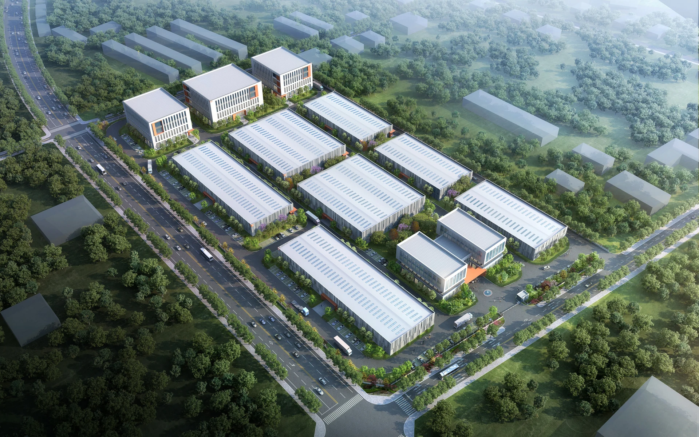
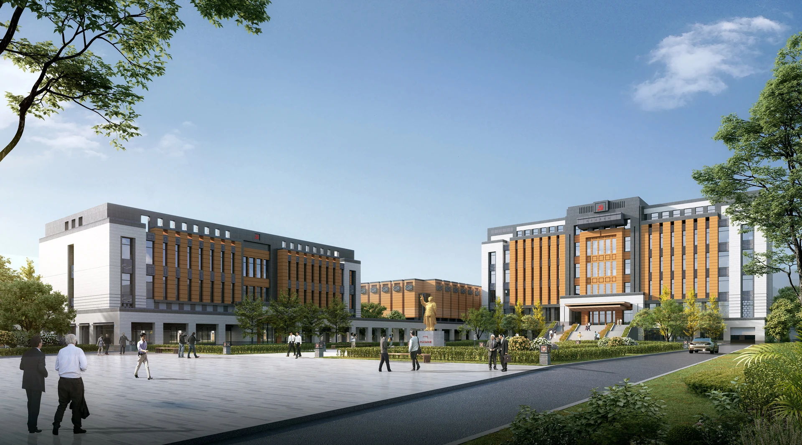
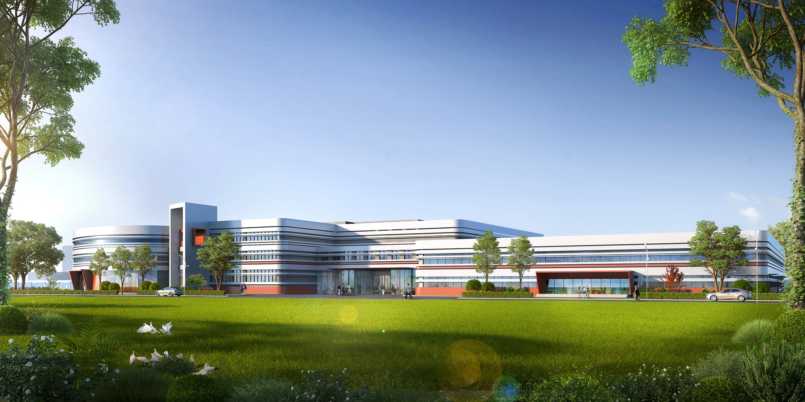
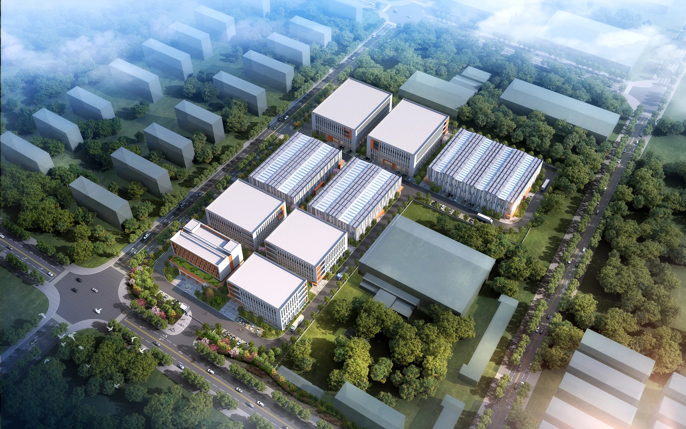
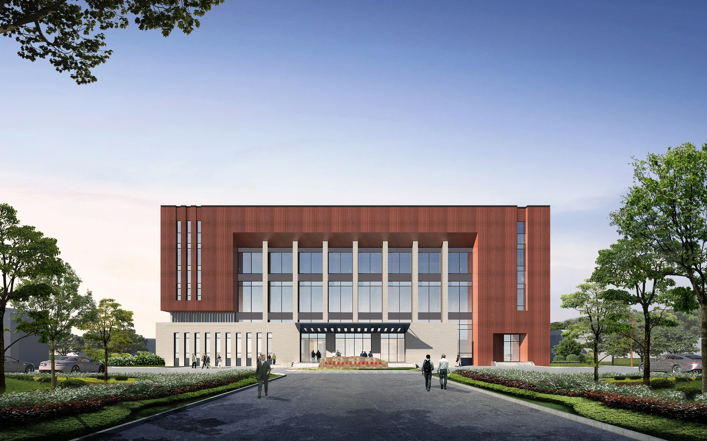
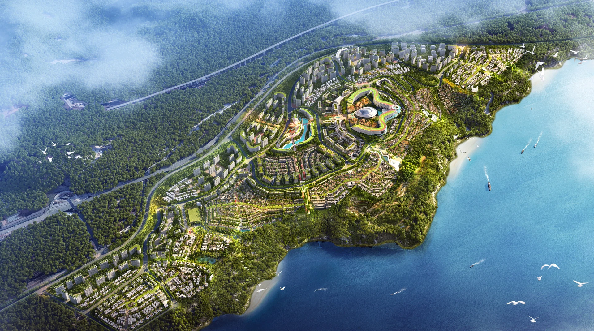
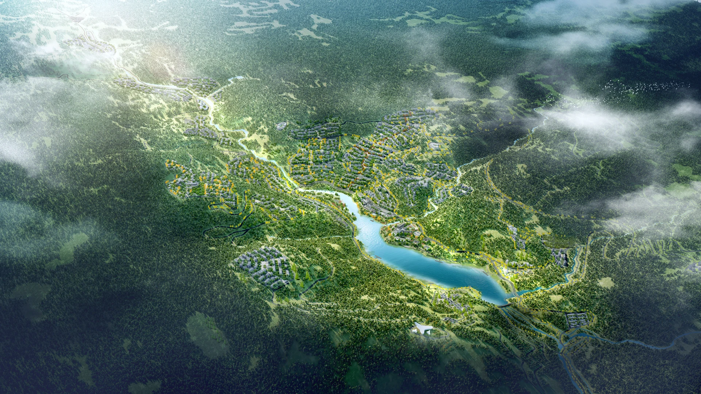
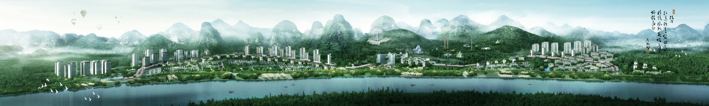

产业园区 · 甘肃庆阳
庆阳 · 驿马智核产业园区
总建筑面积 48,061.74㎡，围绕园区业态运营需求，统筹总图规划与厂房单体设计。
产业园区、公共建筑与规划设计。

总建筑面积 48,061.74㎡，围绕园区业态运营需求，统筹总图规划与厂房单体设计。

位于鸡西市鸡东县的党校建筑方案，以建筑群与前场广场组织校园空间。

上海闵行区的旧厂房改造项目，以连续的水平线条展开沿街立面。

甘肃庆阳合水县的标准化厂房建设项目，围绕产业定位与厂房适应性展开园区设计。

位于鸡西市鸡冠区的疾控中心方案，以红色框架与浅色基座构成立面形象。

位于昆明晋宁大湾片区的滨水小镇规划。

结合山林、湖溪与在地文化的山地康养度假总体规划。

位于柳州西郊、用地77.43公顷的小镇规划设计。